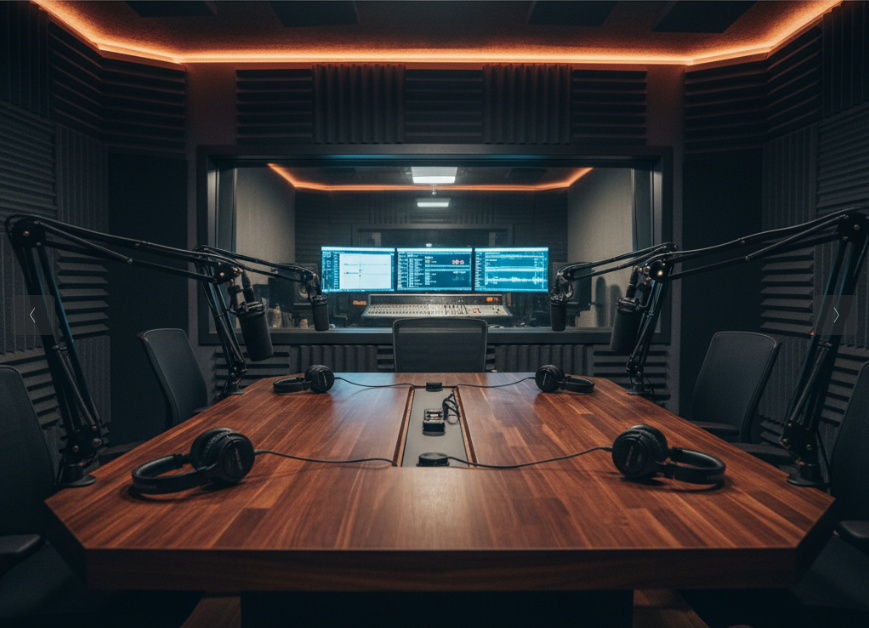
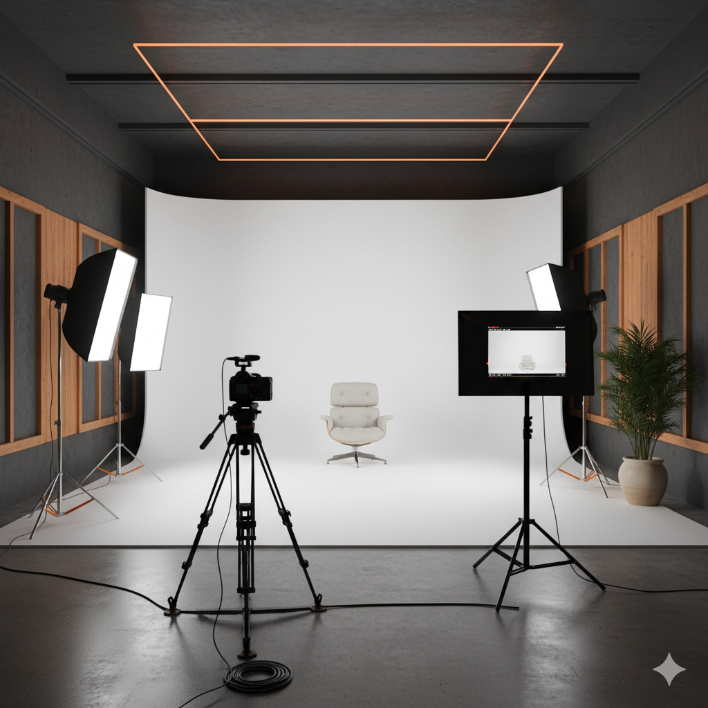

Nossa Filosofia
No Estúdio Eco, acreditamos na importância de um ambiente sustentável
e acolhedor para a criação de conteúdo.
Nosso compromisso é
oferecer serviços de alta qualidade enquanto minimizamos nosso impacto
ambiental.
Nossos Ambientes
-
Estúdio de Gravação de Podcasts
Equipado com tecnologia de ponta para garantir a melhor qualidade de som.
 -
Estúdio de Gravação de Vídeos
Espaço versátil e moderno, ideal para produções audiovisuais.

Nossos Preços
| Serviço | Preço |
|---|---|
| Gravação de Podcast (por hora) | R$ 150,00 |
| Gravação de Vídeo (por hora) | R$ 200,00 |
| Edição e Mixagem (por projeto) | R$ 300,00 |